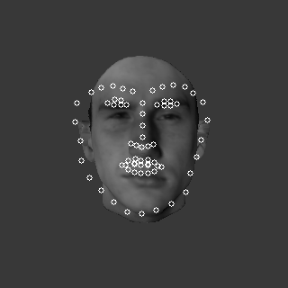
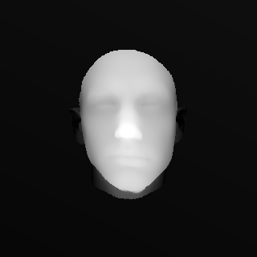
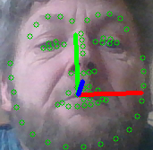

headpose
problem : derive the pose of a human head with respect to the camera :

plan B: derive from profilefaces:
the idea is: the detection weights for the profile cascades are nicecly correlated to the view angle.we can try to determine the angle from 2 cascade detections:
angle = -90*weights_left + 90*weights_right
std::vector<cv::Rect> faces_right,faces_left;
std::vector<int> lvl_right,lvl_left;
std::vector<double> weights_right,weights_left;
// right face side, using profile cascade
profile.detectMultiScale(gray, faces_right, lvl_right, weights_right, 1.2, 1, 0, cv::Size(30, 30), Size(), true);
// flip, and apply again for left one
flip(gray,gray,1);
profile.detectMultiScale(gray, faces_left, lvl_left, weights_left, 1.2, 1, 0, cv::Size(30, 30), Size(), true);
float angle = 0; // formula from paper: a=-90*l+90*r ;)
if (weights_right.size()>0 && weights_right[0]>0)
angle += 90 * weights_right[0] / 4;
if (weights_left.size() && weights_left[0]>0)
angle += -90 * weights_left[0] / 4;
cout << angle << endl;
plan A is ofc.-- use solvePnp():
i will need 3d reference points, sampled at the position of the 2d landmarks: 
i'll try with FacemarkLBF here:
// create and load the facemarks model
cv::Ptr<cv::face::Facemark> facemark;
facemark = cv::face::createFacemarkLBF();
facemark->loadModel("landmarkslbf.yaml");
// load precalculated 68 3d points from file
std::vector<cv::Point3d> pts3d;
cv::FileStorage fs2("points3d.yml",0);
fs2["points"] >> pts3d;
fs2.release();
then for each image, detect a face, then get the current landmarks:
std::vector<cv::Rect> rects;
face_cascade.detectMultiScale(gray_img, faces, 1.4, 2, cv::CASCADE_SCALE_IMAGE, cv::Size(30, 30));
std::vector<cv::Rect> faces(1,rects[0]);
std::vector< std::vector<cv::Point2f> > shapes;
facemark->fit(gray_img,faces,shapes)
std::vector<cv::Point2d> &pts2d;
for(size_t k=0; k<shapes[0].size(); k++)
pts2d.push_back(shapes[0][k]);
now we can apply solvePnP:
// if you did not calibrate it, use a camMatrix based on img size:
cv::Mat rvec,tvec;
cv::Mat camMatrix;
int max_d = std::max(s.width,s.height);
camMatrix = (cv::Mat_<double>(3,3) <<
max_d, 0, s.width/2.0,
0, max_d, s.height/2.0,
0, 0, 1.0);
// 2d -> 3d correspondence
cv::solvePnP(pts3d, pts2d, camMatrix, cv::Mat(1,4,CV_64F,0.0), rvec, tvec, false, cv::SOLVEPNP_EPNP);
